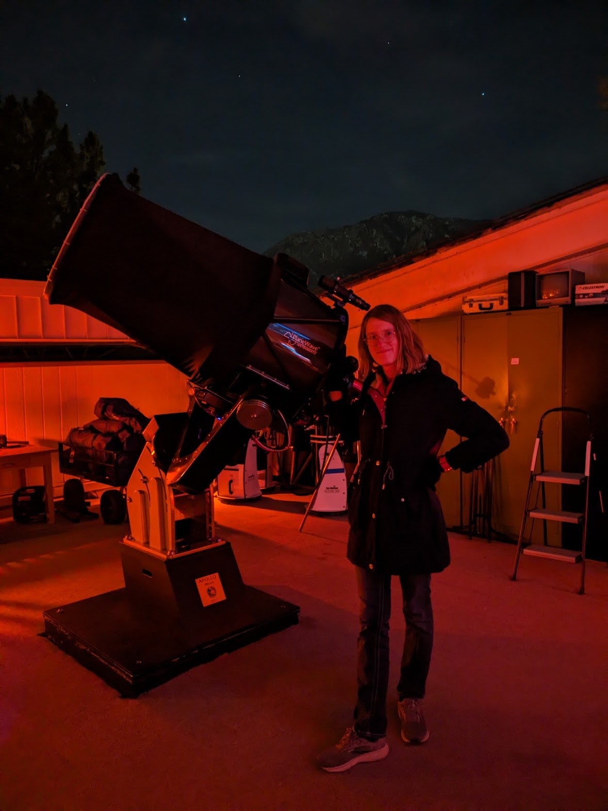

Exoplanet Astronomer
About Me
Hello! My name is Autumn Stephens, and I am a Ph.D. candidate in CU Boulder's Department of Astrophysical & Planetary Sciences. Currently, I am studying TOI-3884 to learn about the shape, location, and temperature of it's years-old persistent starspot. This will give us crucial information about how starspots contaminate exoplanet transmission spectra, and how we can account for this contamination when characterizing exoplanet atmospheres.
Outside of my research, I enjoy music composition, creating animations, and reading! I have included a handful of my non-academic projects on my website as well, so feel free to check those out if you're interested in seeing some of my other work!

Curriculum Vitae (CV)
I will periodically update my CV with my recent work and experiences! Below is a downloadable version that was last updated on 3/15/2026.